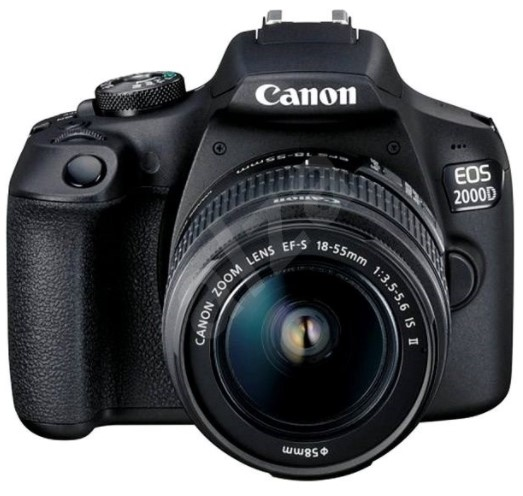
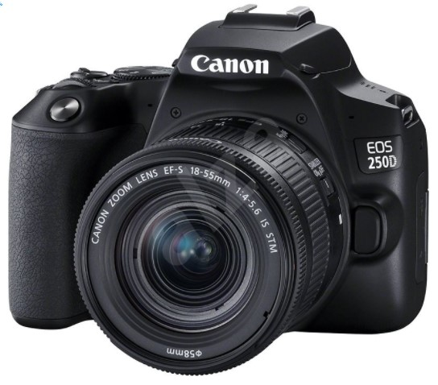
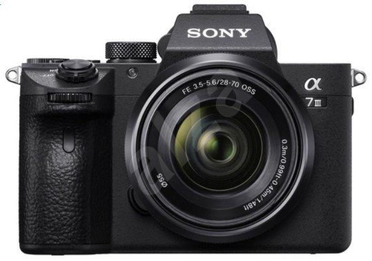
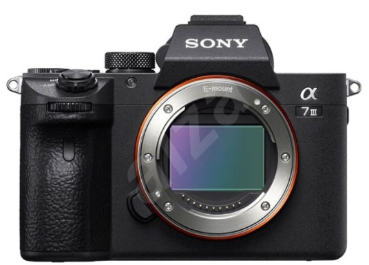
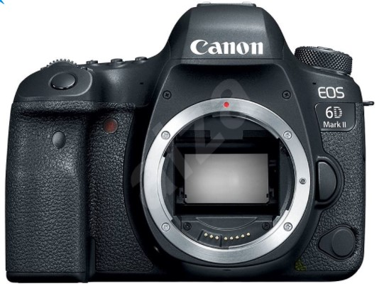

Fotoaparáty
Najpredávanejšie
Canon EOS 2000D + 18–55 mm IS II
Cena s dph: 389€

Digitálny fotoaparát – zrkadlovka, APS-C, CMOS 24.1Mpx, DIGIC 4+, bajonet Canon EF/EF-S, 3" displej, Full HD video, SD/SDHC/SDXC, optický hľadáčik, WiFi, mini HDMI, USB, NFC, sekvenčné snímanie 3sn./s + objektív Canon EF-S 18–55mm IS II (29–88mm f/3.5–5.6, stabilizácia).
Canon EOS 250D čierny + 18–55 mm IS STM
Cena s dph: 629€

Digitálny fotoaparát – zrkadlovka, APS-C, CMOS 24.1Mpx, Dual Pixel CMOS AF, bajonet Canon EF, 3" TFT otočný dotykový displej, 4K video, HDR, SD/SDHC/SDXC, optický hľadáčik, WiFi, Bluetooth, HDMI, USB, sekvenčné snímanie 5 sn./s + objektív 18 – 55mm (f/4.0 – 5.6) IS STM.
Sony Alpha A7 III + FE 28–70 mm OSS
Cena s dph: 2 090€

Digitálny fotoaparát – bezzrkadlovka, Full Frame, CMOS Exmor 24.2Mpx, bajonet Sony E, Eye Auto Focus, 3" výklopný dotykový displej, 4K video, SD/SDHC/SDXC+microSD/SDHC/SDXC+MS PRO, elektronický hľadáčik, WiFi, NFC, HDMI, USB, sekvenčné snímanie 10sn./s+objektiv 28–70mm f/3.5–5.6, stabilizácia.
Sony Alpha A7 III telo
Cena s dph: 2 049€

Digitálny fotoaparát – bezzrkadlovka, Full Frame, CMOS Exmor R 24.2Mpx, bajonet Sony E, Eye Auto Focus, 3" výklopný dotykový displej, 4K video, SD/SDHC/SDXC+microSD/SDHC/SDXC+MS PRO, elektronický hľadáčik, WiFi, NFC, HDMI, USB, sekvenčné snímanie 10sn./s.
Canon EOS 6D Mark II telo
Cena s dph: 1 099€

Digitálny fotoaparát – zrkadlovka, Full Frame, CMOS 26.2Mpx, DIGIC 7, bajonet Canon EF, 3" výklopný dotykový displej, Full HD video, HDR, SD/SDHC/SDXC, optický hľadáčik, WiFi, Bluetooth, HDMI, USB, NFC, sekvenčné snímanie 6.5 sn./s.